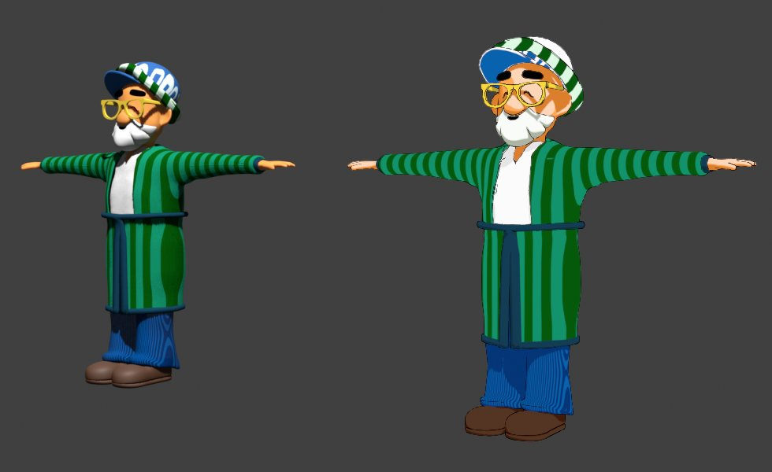
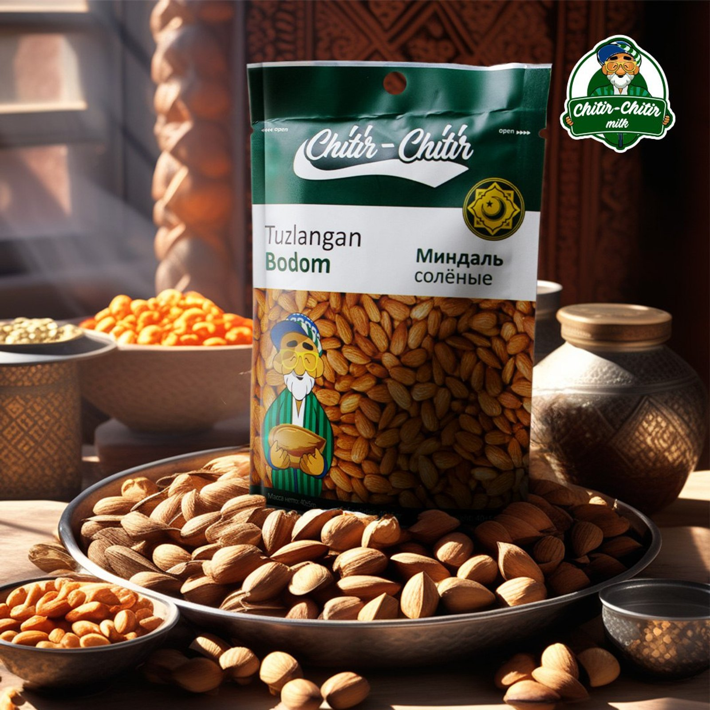
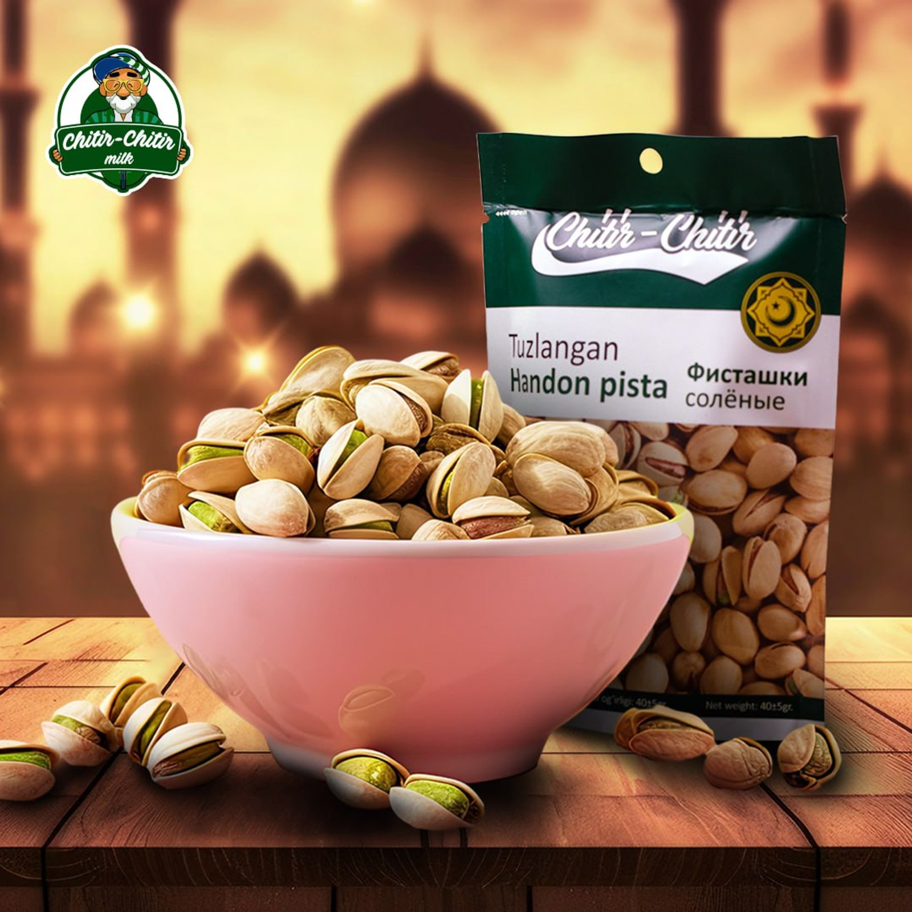

01
Act IApproach
The brand's 2D mascot rebuilt as a 3D character in Blender, plus posts and stories in Russian and Uzbek — the product and mascot shot large against festive props.

Social media and videos for the Chitir-Chitir milk nuts brand and a 3D rebuild of the brand mascot.
The brand's 2D mascot rebuilt as a 3D character in Blender, plus posts and stories in Russian and Uzbek — the product and mascot shot large against festive props.
The brand’s 2D mascot rebuilt as a 3D character (Blender).

Posts and stories in Russian and Uzbek.


Contacts will appear here soon.